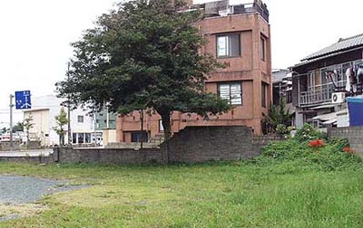

三井三池炭鉱白金社宅
福岡県大牟田市白金町
写真の社宅跡地は現在、ある宗教団体の専用駐車場になっている。その他、白金町の何箇所かに 社宅跡が見られる。白金社宅は職員社宅であった所で、三池争議時、会社側の立役者であった大沢係長の住まいもあった。その 他大邸宅に混じって検察庁や拘置所があり、それらの官舎も集中している。
福岡県大牟田市による昭和35年10月1日現在「町別世帯数人口および戸数一覧」には、
川尻校区 白金町 世帯数386 人口1560（男747、女813） 戸数373戸
とある。
平成16年10月1日現在にあっては、
白金町 世帯数233 人口526（男229、女297）
と変化している。

（2003年9月25日撮影）
BACK